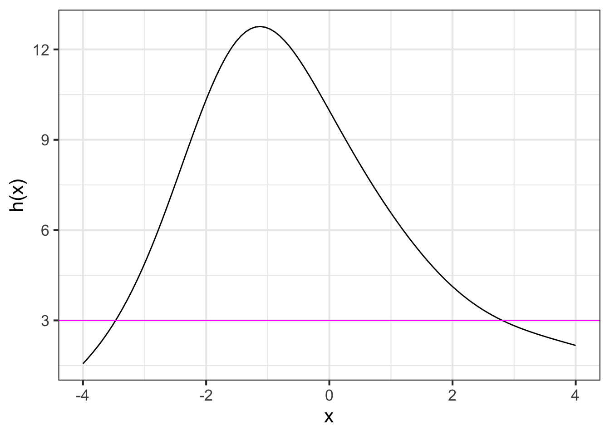

13 Operations on functions
Chapters -sec-parameters through -sec-fitting-by-feature introduced concepts and techniques for constructing functions. This is an important aspect of building models, but it is not the only one. Typically, a modeler, after constructing appropriate functions, will manipulate them in ways that provide the information required to answer questions that motivated the modeling work.
This will introduce some of the operations and manipulations used to extract information from model functions.1 There are five such operations that you will see many times throughout this book. They are:
- Zero-finding: finding an input that produces the desired output
- Optimization: finding an input that produces the largest output
- Iteration: building a result step-by-step
- Differentiation
- Integration
This chapter will introduce the first three of these. The remaining two—differentiation and integration—are the core operations of calculus. They will be introduced starting in Block II.
We will look at the three operations from two different perspectives: graphical and computational. Often, a graph can let you carry out the operation with sufficient precision for the purpose at hand. Graphs are relatively modern, coming into mainstream use only in the 1700s. Much of mathematics was developed before graphs were invented. One consequence of this is that function tasks that are easy using a graph might be very hard with the previous algebraic ways of implementing functions.
More refined work is done with a computer. We will show you software that will let you direct the computer to do precise calculations. The computing algorithms used for inversion and optimization are often based on concepts from calculus that we have not yet encountered. The magic of software is the way it allows experts in a field to communicate with newbies so that people new to a field can use the operation in practice without necessarily developing a complete theoretical understanding of the algorithm. At this stage, our computational focus will be on how to set up the calculation and how to interpret the results.
13.1 Zero finding
A function is a mechanism for turning any given input into an output. Zero finding is about going the other way: given an output value, find the corresponding input. As an example, consider the exponential function \(e^x\). Given a specific input, say \(x=2.135\) you can easily compute the corresponding output:
exp(2.135)
## [1] 8.457047But suppose the information you have at hand is in the form of an output from the function, say \(e^{x_0} = 4.93\). We don’t (yet) know \(x_0\) but, whatever it might be, we know that \(e^{x_0}\) will produce the value 4.93.
How do you find the specific input \(x_0\) that will produce that output? The answer typically presented in high school is to apply another function, \(\ln()\), to the output:
log(4.93)
## [1] 1.595339To confirm that the result 1.595339 is correct, apply the exponential function to it and check that the output is the same as the original, given output 4.93.
exp(1.595339)
## [1] 4.93This process works because we happen to have a function at hand, the logarithm, that is perfectly set up to “undo” the action of the exponential function. In high school, you learned a handful of function/inverse pairs: exp() and log() as you’ve just seen, sin() and arcsin(), square and square root, etc.
Another situation that is usually addressed in high school is inverting low-order polynomial functions. For instance, suppose your modeling function is \(g(x) \equiv 1.7 - 0.85 x + 0.063 x^2\) and you seek the \(x_0\) such that \(g(x_0) = 3\). High school students are taught to approach such problems in a process using the quadratic formula. to apply the quadratic formula, you need to place the problem into a standard format, not \[1.7 - 0.85 x + 0.063 x^2 = 3\] but
\[0.063\, x^2 - 0.85\, x - 1.4 = 0\]
The name “zero-finding” can be a little misleading. The objective is find \(x_0\) such that \(h(x_0) = b\). In this sense, “b-finding” would be a more appropriate name. Instead of chasing after honey as “b-finding” suggests, we reformat the problem into finding \(x_0\) such that \(h(x_0) - b = 0\). In other words, we look for zeros of the function \(h(x) - b\).
One reason that low-order polynomials are popular in modeling is that such operations are straightforward.
If none of the high-school approaches are suited to your modeling function, as is often the case, you can still carry out the zero-finding operation.
13.1.1 Graphical zero-finding

Suppose you may have a function \(h(x)\) that you constructed by linear combination and/or function multiplication and/or function composition. To illustrate, we will work with the function \(h(x)\) graphed in Figure fig-zero-finding1. And suppose the output for which we want to find a corresponding input is 3, that is, we want to find \(x_0\) such that \(h(x_0)=3\).
The steps of the process are:
- Graph the function \(h(x)\) over a domain interval of interest.
- Draw a horizontal line located at the value on the right-hand side of the equation \(h(x_0) = 3\). (This is the \(\color{magenta}{\text{magenta}}\) line in Figure fig-zero-finding1.)
- Find the places, if any, where the horizontal line intersects the graph of the function. In Figure fig-zero-finding1, there are two such values: \(x_0 = -3.5\) or \(x_0 = 2.75\).
The graph shows a function \(g(t)\). Find a value \(t_0\) such that \(g(t_0) = 5\).
- Draw a horizontal line at output level 5.
- Find the t-value where the horizontal line intersects the function graph. There is only one such intersection and that is at about \(t=1.2\).
Consequently, \(t_0 = 1.2\), at least to the precision possible when reading a graph.
The graphical approach to zero finding is limited by your ability to locate positions on the vertical and horizontal axis. If you need more precision than the graph provides, you have two options:
Take a step-by-step approach. Use the graph to locate a rough value for the result. Then refine that answer by drawing another graph, zooming in on a small region around the result from the first step. You can iterate this process, repeatedly zooming in on the result you got from the previous step.
Use software implementing a numerical zero-finding algorithm. Such software is available in many different computer languages and a variety of algorithms is available, each with its own merits and demerits.
13.1.2 Numerical zero finding
In this book, we will use the R/mosaic Zeros() function. The first argument is a tilde expression and the second argument an interval of the domain over which to search.
Zeros() is set up to find inputs where the function defined in the tilde expression produces zero as an output. But suppose you are dealing with a problem like \(f(x) = 10\)? You can modify the tilde expression so that it implements a slightly different function: \(f(x) - 10\). If we can find \(x_0\) such that \(f(x_0) - 10 = 0\), that will also be the \(x_0\) satisfying \(f(x_0) = 10\).
The point of this example is to show how to use Zeros(), so we will define a function \(f(x)\) using rfun() from R/mosaic. This constructs a function by taking a linear combination of other functions selected at random. The argument seed=579 determines which functions will be in the linear combination.
f <- rfun( ~ x, seed=579)We want to find the zeros of the function \(f(x) - 10\) which corresponds to solving \(f(x) = 10\).
Zeros(f(x) - 10 ~ x, bounds(x=-4:4))
## # A tibble: 2 × 2
## x .output.
## <dbl> <dbl>
## 1 -2.92 -0.0000000344
## 2 0.0795 -0.00000118The output produced by Zeros() is a data frame with one row for each of the \(x_0\) found. Here, two values were found: \(x_0 = -2.92\) and \(x_0 = 0.0795\). The .output column reports \(f(x_0)\) which should be zero. It is not always feasible to reach zero exactly, since computer arithmetic is not always exactly precise.
Think about Zeros() as a way to refine answers you found graphically. So before using Zeros(), make the graph.
slice_plot(f(x) ~ x, bounds(x=-4:4)) %>%
gf_hline(yintercept = ~ 10, color="magenta")
13.2 Optimization
Optimization problems consist of both a modeling phase and a solution phase.
13.2.1 Graphical optimization
Look for local peaks, then read off the input that generates the value at the peak.
13.2.2 Numerical optimization
When it comes to functions, maximization is the process of finding an input to the function that produces a larger output than any of the other, nearby inputs.
To illustrate, Figure fig-show-peak1 shows a function with two peaks.

Just as you can see a mountain top from a distance, so you can see where the function takes on its peak values. Draw a vertical line through each of the peaks. The input value corresponding to each vertical line is called an argmax, short for “the argument2 at which the function reaches a local maximum value.
Minimization refers to the same technique, but where the vertical lines are drawn at the deepest point in each “valley” of the function graph. An input value located in one of those valleys is called an argmin.
Optimization is a general term that covers both maximization and minimization.
13.2.3 Numerical optimization
The R/mosaic argM() function a functions argmax and argmin over a given domain. It works in exactly the same way as slice_plot(), but rather than drawing a graphic it returns a data frame giving the argmax in one row and the argmin in another. For instance, the function shown in Figure fig-show-peak1 is \(h()\), generated by rfun():
h <- rfun(~ x, seed=7293)
argM(h(x) ~ x, bounds(x=-5:5))
## # A tibble: 2 × 3
## x .output. concavity
## <dbl> <dbl> <dbl>
## 1 -1.68 1.93 1
## 2 0.173 8.25 -1The x column holds the argmax and argmin, the .output. column gives the value of the function output for the input x. The concavity column tells whether the function’s concavity at x is positive or negative. Near a peak, the concavity will be negative; near a valley, the concavity is positive. Consequently, you can see that the first row of the data frame corresponds to a local minimum and the second row is a local maximum.
argM() is set up to look for a single argmax and a single argmin in the domain interval given as the second argument. In Figure fig-show-peak1 there are two local peaks and two local valleys. argM() gives only the largest of the peaks and the deepest of the valleys.
13.3 Iteration
Many computations involve starting with a guess followed by a step-by-step process of refining the guess. A case in point is the process for calculating square roots. There isn’t an operational formula for a function that takes a number as an input and produces the square root of that number as the output. When we write \(\sqrt{\strut x}\) we aren’t saying how to calculate the output, just describing the sort of output we are looking for.
The function that is often used to calculate \(\sqrt{x}\) is better():
\[\text{better(guess)} = \frac{1}{2}\left( \text{guess} + \frac{x}{\text{guess}}\right)\ .\]
It may not be at all clear why this formula is related to finding a square root. Let’s put that matter off until the end of the section and concentrate our attention on how to use it.
To start, let’s define the function for the computer:
better <- makeFun((guess + x/guess)/2 ~ guess)Notice that \(x\) is cast in the role of a parameter of the function rather than an input to the function.
Suppose we want to apply the square root function to the input 55, that is, calculate \(\sqrt{\strut x=55}\). The value we should assign to \(x\) is therefore 55.
To calculate better(guess) we need not only \(x=55\) but a value for the guess. What should be this value and what will we do with the quantity better(guess) when we’ve calculated it.
Without explanation, we will use guess = 1, regardless of the value of \(x\). Calculating the output …
better(1, x=55)
## [1] 28Neither our guess 1 nor the output 28 are \(\sqrt{\strut x=55}\). (Having long-ago memorized the squares of integers, we know \(\sqrt{\strut x=55}\) will be somewhere between 7 and 8. Neither 1 nor 28 are in that interval.)
The people—more than two thousand years ago—who invented the ideas behind the better() function were convinced that better() constructs a better guess for the answer we seek. It is not obvious why 28 should be a better guess than 1 for \(\sqrt{\strut x=55}\) but, out of respect, let’s accept their claim.
This is where iteration comes in. Even if 28 is a better guess than 1, 28 is still not a good guess. But we can use better() to find something better than 28:
better(28, x=55)
## [1] 14.98214To iterate an action means to perform that action over and over again. (“Iterate” stems from the Latin word iterum, meaning “again.”) A bird iterates its call, singing it over and over again. In mathematics, “iterate” has a twist. When we repeat the mathematical action, we will draw on the results of the previous angle rather than simply repeating the earlier calculation.
Continuing our iteration of better() …
better(14.98214, x=55)
## [1] 9.326589
better(9.326589, x=55)
## [1] 7.611854
better(7.611854, x=55)
## [1] 7.418713
better(7.418713, x=55)
## [1] 7.416199
better(7.416199, x=55)
## [1] 7.416198In the last step, the output of better() is practically identical to the input, so no reason to continue. We can confirm that the last output is a good guess for \(\sqrt{\strut x=55}\):
7.416198^2
## [1] 54.9999913.3.1 Graphical iteration
To iterate graphically, we graph the function to be iterated and mark the initial guess on the horizontal axis. For each iteration step, trace vertically from the current point to the function, then horizontally to the line of identity (blue dots). The result will be the starting point for the next guess.

better() starting with an initial guess of 1.13.3.2 Numerical iteration
Use the R/mosaic Iterate() function. The first argument is a tilde expression defining the function to be iterated. The second is the starting guess. The third is the number of iteration steps. For instance:
Iterate(better(guess, x=55) ~ guess, x0=1, n=8)
## n guess
## 1 0 1.000000
## 2 1 28.000000
## 3 2 14.982143
## 4 3 9.326590
## 5 4 7.611854
## 6 5 7.418713
## 7 6 7.416199
## 8 7 7.416198
## 9 8 7.416198The output produced by Iterate() is a data frame. The initial guess is in the row with \(n=0\). Successive rows give the output, step by step, with each new iteration step.
Where does better() come from?
For calculating square roots, we used the function
\[\text{better}(y) = \frac{1}{2}\left( y + \frac{x}{y}\right)\ .\]
Let’s suppose you happened on a guess that is exactly right, that is \(y = \sqrt{x}\). There is no way to improve on a guess that is exactly right, so the best better() can do is to return the guess unaltered. Indeed it does:
\[\text{better}\left(y=\!\!\sqrt{\strut x}\ \right) = \frac{1}{2}\left( \sqrt{\strut x} + \frac{x}{\sqrt{x}} \right)\ = \frac{1}{2}\left(\sqrt{\strut x} + \sqrt{\strut x}\right) = \sqrt{\strut x}.\]
Of course, the initial guess \(y\) might be wrong. There are two ways to be wrong:
- The guess is too small, that is \(y < \sqrt{\strut x}\).
- The guess is too big, that is \(\sqrt{\strut x} < y\).
The formula for better() is the average of the guess \(y\) and another quantity \(x/y\). If \(y\) is too small, then \(x/y\) must be too big. If \(y\) is too big, then \(x/y\) must be too small.
As guesses, the two quantities \(y\) and \(x/y\) are equivalent in the sense that \(\text{better}(y) = \text{better}(x/y)\). The average of \(y\) and \(x/y\) will be closer to the true result than the worst of \(y\) or \(x/y\); the average will be a better guess.
13.4 Drill
No drill available yet.
13.5 Exercises
Exercise 13.03
Consider the function \(h(x)\) graphed below:

For each of the values \(b\) listed below, use graphical zero finding to identify one or more \(x_0\) that will satisfy \(h(x) = b\). If there are no such \(x_0\) in the domain interval used in the graph, say so. (Your answer need only be precise to \(\pm 0.1\).)
- \(b=100\)
- \(b=300\)
- \(b=500\)
- \(b= -100\)
Exercise 13.04
Consider the problem of finding a value of \(x\) such that \(cos(x) = x^2\). This is easy to do graphically: find the input where the graphs of \(cos(x)\) and \(x^2\) cross.

In a sandbox, create a function \(h(x)\) that is zero when the equation is satisfied. Pass the tilde expression h(x) ~ x to the R/mosaic Zeros() operator to find a precise numerical answer to the problem:
h <- makeFun( __define_your_h_function__ )
Zeros(h(x) ~ x)Exercise 13.05
Part A What is the exact input to the pattern-book logarithm function where the output is 0?
0 0.3989423 1/2 1
Part B What is the exact input to the pattern-book reciprocal function where the output is 1?
0 0.3989423 1/2 1
Part C What is the exact input to the pattern-book proportional function where the output is 1/2?
0 0.3989423 1/2 1
Part D The pattern-book square function just touches the horizontal axis. What’s the input where this happens?
0 0.3989423 1/2 1
Exercise 13.07
The graphs of functions and their inverses are related by a flip around the line of identity, shown in green in the following graph.

The black curve is the graph of \(e^x\).
Part A Is the magenta curve the graph of a function? (Hint: Does it pass the vertical line test?)
Yes No
Part B Which of these functions is graphed in magenta?
\(1/x\) \(\ln(x)\) \(\sqrt{x}\) \(e^{-x}\) \(-e^{x}\)